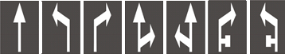

1
2
3
4
5
6
7
8
9
10
11
12
13
14
15
16
17
18
19
20
21
22
23
24
25
26
27
28
29
30
31
32
33
34
11. Расположение транспортных средств на дороге
11.1.
Количество полос на проезжей части для движения нерельсовых транспортных средств определяется дорожной разметкой или дорожными знаками
 5.16,
5.16,
 5.17.1,
5.17.2
(см. приложение 1), а при их отсутствии – самими водителями с учетом ширины проезжей части соответствующего направления движения, габаритов транспортных средств и безопасных интервалов между ними.
5.17.1,
5.17.2
(см. приложение 1), а при их отсутствии – самими водителями с учетом ширины проезжей части соответствующего направления движения, габаритов транспортных средств и безопасных интервалов между ними.
11.2.
На дорогах, имеющих две или больше полос для движения в одном направлении, нерельсовые транспортные средства должны двигаться как можно ближе к правому краю проезжей части, кроме случаев, когда выполняется опережение, объезд или перестроение перед поворотом налево или разворотом.
11.3.
На дорогах с двусторонним движением, имеющих по одной полосе для движения в каждом направлении, при отсутствии сплошной линии дорожной разметки или соответствующих дорожных знаков выезд на полосу встречного движения возможен только для обгона и объезда препятствия или остановки, или стоянки у левого края проезжей части в населенных пунктах в разрешенных случаях, при этом водители встречного направления имеют преимущество.
11.4.
На дорогах с двусторонним движением, имеющих по меньшей мере две полосы для движения в одном направлении, запрещается выезжать на предназначенную для встречного движения сторону дороги.
11.5.
На дорогах, имеющих две и более полосы для движения в одном направлении, выезд на крайнюю левую полосу для движения в этом же направлении разрешается, если правые заняты, а также для поворота налево, разворота или для остановки либо стоянки на левой стороне дороги с односторонним движением в населенных пунктах, если это не противоречит правилам остановки (стоянки).
11.6.
На дорогах, имеющих три и более полосы для движения в одном направлении, грузовым автомобилям с разрешенной максимальной массой
свыше 3,5 т,
тракторам, самоходным машинам и механизмам разрешается выезжать на крайнюю левую полосу только для поворота налево и разворота, а в населенных пунктах на дорогах с односторонним движением, кроме этого, – для остановки слева, в разрешенных случаях, с целью погрузки или разгрузки.
11.7.
Транспортные средства, скорость движения которых не должна
превышать 40 км/ч
или которые по техническим причинам не могут развивать такую скорость, должны двигаться как можно ближе к правому краю проезжей части, кроме случаев, когда выполняется обгон, объезд или перестроение перед поворотом налево или разворотом.
11.8.
По трамвайным путям попутного направления, расположенным на одном уровне с проезжей частью для нерельсовых транспортных средств, разрешается движение при условии, что это не запрещено дорожными знаками или дорожной разметкой, а также во время опережения, объезда, когда ширина проезжей части недостаточна для выполнения объезда, без выезда на трамвайные пути.
На перекрестке разрешается выезжать на трамвайные пути попутного направления в тех же случаях, но при условии отсутствия перед перекрестком дорожных знаков

 5.16-5.19
(см. приложение 1).
5.16-5.19
(см. приложение 1).
Поворот налево или разворот должны выполняться с трамвайных путей попутного направления, расположенных на одном уровне с проезжей частью для нерельсовых транспортных средств, если иной порядок движения не предусмотрен дорожными знаками
5.16,
5.18
(см. приложение 1) или разметкой

1.18
(см. приложение 2).
Во всех случаях не должны создаваться препятствия для движения трамвая.
11.9.
Запрещается выезжать на трамвайные пути встречного направления, отделенные от проезжей части трамвайные пути и разделительную полосу.
11.10.
На дорогах, проезжая часть которых разделена на полосы движения линиями дорожной разметки, запрещается двигаться, занимая одновременно две полосы. Наезжать на прерывистые линии разметки разрешается только во время перестроения.
11.11.
При интенсивном движении менять полосу разрешается только для объезда препятствия, поворота, разворота или остановки.
11.12.
Водитель, осуществляющий поворот на дорогу, имеющую полосу для реверсивного движения, может перестраиваться на нее только после проезда реверсивного светофора с сигналом, разрешающим движение, и если это не противоречит пунктам 11.2 , 11.5 и 11.6 данных Правил.
11.13.
Запрещается движение транспортных средств по тротуарам и пешеходным дорожкам, кроме случаев, когда они используются для выполнения работ или обслуживания торговых и иных предприятий, расположенных непосредственно возле этих тротуаров или дорожек, при отсутствии других подъездов и при условии выполнения требований пунктов 26.1 - 26.3 данных Правил.
11.14.
Движение по проезжей части на велосипедах, мопедах, гужевых повозках (санях) и всадникам разрешается только в один ряд по правой крайней полосе как можно правее, за исключением случаев, когда выполняется объезд. Поворот налево и разворот разрешаются на дорогах с одной полосой для движения в каждом направлении и без трамвайных путей посередине. Разрешается движение по обочине, если это не создаст препятствий пешеходам.